Management Team
Health Care and Medical Clinic
Mr. Paron Israsena Na Ayudhaya
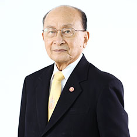
Position:
Education:
- Master of Science (Mechanical Engineering), Massachusetts Institute of Technology, U.S.A.
- Bachelor of Engineering (Mechanical Engineering), Chulalongkorn University
- Bachelor of Engineering (Electrical Engineering), Second Class Honor, Chulalongkorn University
Work Experiences
- Chairman of Vichaiyut Hospital
- Chairman of the National Economics and Social Development Board
- Member of the National Science&Technology Development Board
- Chairman of the Board of Thaicom Public Company Limited
- Honorary President of Magnolia quality Development Corporation
- Honorary President of the Federation of Thai Industrie
- Member of Private Sector Collective Action Coalition Against Corruption Council (CAC)
- Presedent of suksaphattana foundationa and president of Lighthouse Project
- Vice president of Thaicom Foundation
- Member of State Enterprise Board Selection Committee
- Chairman of Shinawatra University Council
- Committee of Institute for Management Education for Thailand Foundation (IMET)
- Chairman of Mitr Technical Consultant Co.,Ltd
- Committee of Park Nai Lart Co.,Ltd
- Consultant of Thailand Quality Award
- President of Darunsikkhalai School for Innovative Learning of KMUTT
- Member of Thailand Railway Technology Development Institute Project Subcommittee
- Member of National Competitiveness Development Committee
- Honorary Member of Sasin Graduate Institute of Business Administration of Chulalongkorn University
- Consultant of Management System Certification Institute (Thailand)
- Honorary Council Member of Council of Chiang Mai Rajabhat University
- Consultant of Eye Bank of Thailand Committee
- Member of Thai Red Cross
Honours and Awards
- Knight and Dame Grand Commander (Second Class, higher grade) of the Most Illustrious Order of Chula Chom Klao
- Knight and Dame Grand Cordon (Special Class) of the Most Exalted Order of the White Elephant
- Commanders in the Order of the Crown
- Knight and Dame Grand Cordon (Special Class) of the Most Noble Order of the Crown of Thailand
- Knight and Dame Commander (Second Class, lower grade) of the Most Illustrious Order of Chula Chom Klao
- Knight and Dame Grand Cross (First Class) of the Most Exalted Order of the White Elephant
- Grand Companion (Third Class, higher grade) of the Most Illustrious Order of Chula Chom Klao
- Knight and Dame Grand Cross (First Class) of the Most Noble Order of the Crown of Thailand
- Commander (Third Class) of the Most Admirable Order of the Direkgunabhorn.
- Senator
- Member of National Legislative Assembly of Thailand
Dr. Prapote Clongsusuek
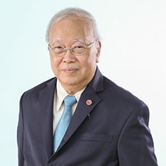
Position:
- Managing Director and President
Speciality:
Language spoken:
Medical school:
- Faculty of Medicine, Chiang Mai University
Residencies:
- Ramathibodi Hospital
- Wayne State University, U.S.A.
Fellowships:
- Ramathibodi Hospital
- Wayne State University, U.S.A.
Certifications:
- Thai Board of Otolaryngology
- Diplomate, American Board of Otolaryngology
Tanpuying Tasniya Punyagupta
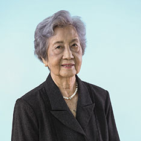
Position
Education
- Bachelor in Arts, Chulalongkorn University
- Ph.D., Master of Science in Elementary Education, University of Wisconsin, U.S.A.
Work Experiences
- Assistant Librarian at USIS, Liason Officer to Fullbright Foundation
- Head of English Department, Faculty of Humanities, Kasetsart University
- Principal of Chitralada School
Honours and Awards
- International Study Grant from AAUW
- Royal Decorations of the Chula Chomklao and the Crown of Thailand
- Honorary Degrees : Honorary Doctorate from Chulalongkorn University
- Angela Award from Mater Dei School
- Outstanding Teacher's Award from Dr.Tiam Chokewattana Foundation
Lt. Gen. Clinical Professor, Dr. Naronk Rodwarna
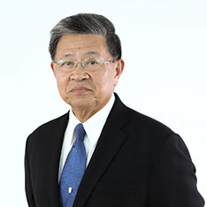
Position
Speciality
- General Surgery
- Cardio-Thoracic Surgery
Language spoken
Medical school
- Faculty of Medicine, Chulalongkorn University
Residencies
- General Surgery, St. Luke's Hospital and Medical Center, Cleveland, Ohio, U.S.A.
- Thoracic Surgery, School of Medicine, Case Western Reserve University, Cleveland, Ohio,U.S.A.
Fellowships
- Royal College of Surgeons of Thailand (FRCST.)
- International College of Surgeons (FICS.)
- American College of Surgeons (FACS.)
- American College of Chest-Physicians (FCCP.)
Certifications
- Thai Board of Thoracic Surgery
- Thai Board of Critical Care Medicine
- Diplomate, American Board of Surgery
- Diplomate, American Board of Thoracic Surgery
Work Experiences
- Dean for Academic Affairs, Phramongkutklao College of Medicine, Mahidol University
- Clinical Professor of Surgery, Phramongkutklao College of Medicine, Mahidol University
- Deputy Surgeon General and Senior Consultant and Expert of Royal Thai Army
- Hospital Director and Surgeon-In-Chief, Vichaiyut Hospital
- President of The Association of Military Surgeons of Thailand Under the Royal Patronage of His Majesty the King
- President of The Society of Thoracic Surgeons of Thailand
- Governor, American College of Surgeons, Thailand Chapter
- President, Royal College of Surgeons of Thailand
- President of Association of Thoracic and Cardovascular Surgeons of Asia
Honours and Awards
- Honorary Royal Guard Regiment, Chula Chomklao Cadet Academy, Royal Thai Army
- Outstanding Teacher's Award from Phramongkutklao College of Medicine, Mahidol University
- Outstanding Medical Doctor's Award for Ethics from Medical Council of Thailand
- Outstanding Military Medical Doctor's Award for Academic and Researches from Medical Armsforce of Thailand
Dr. Chamnan Bhu-eiam
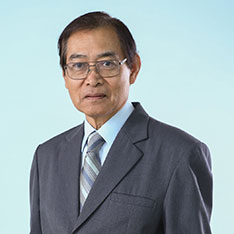
Position
Education
- Faculty of Medicine, Chulalongkorn University
- Leadership Program, Office of The Civil Service Commission
- Leadership Program, Ministry of Public Health
- Attend the seminar in Hospital and Public Health Management in U.S.A., Europe, Australia and Asia (Scholarship from Ministry of Public Health, JICA Scholarship from Japanese Government and USAID Scholarship from U.S.A. Government)
Work Experiences
- Executive Director, Vichaiyut Hospital
- Advisor of the Ministry of Public Health
- Head of Inspector of the Ministry of Public Health
- Advisor to the Deputy Minister, Ministry of Public Health
- Advisor to the Permanent Secretary, Ministry of Public Health
Honours and Awards
- Knight and Dame Grand Cordon (Special Class) of the Most Exalted Order of the White Elephant
- Knight and Dame Grand Cordon (Special Class) of the Most Noble Order of the Crown of Thailand
- Honour Outstanding Hospital Director (Affiliated with Ministry of Public Health of Thailand)
- Honour Outstanding Public Health Officer in Service Management
Dr. Kamthorn Phaosawasdi
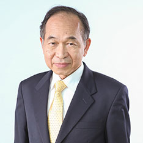
Position
- Executive Director and Director of Vichaiyut Hospital
Speciality
Language spoken
Medical school
- "Faculty of Medicine Ramathibodi Hospital, Mahidol University
"
Residencies
- Internal Medicine, Thomas Jefferson University Hospital, U.S.A.
Fellowships
- Gastroenterology, Temple University Hospital, U.S.A.
Certifications
- Diplomate, American Board of Internal Medicine
- Diplomate, American Board of Gastroenterology
- Advanced Achievement in Internal Medicine
Dr. Phaiboon Jittivanich
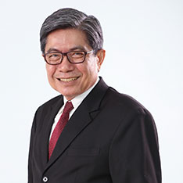
Position
Speciality
- Obstetrics and Gynecology
Language spoken
Medical school
- Faculty of Medicine Ramathibodi Hospital, Mahidol University
Residencies
- Obstetrics and Gynecology, Albany Medical College, Albany, New York,U.S.A.
Fellowships
- Gynecology (Infertility and Gynecologic Endocrinology), Peter Bent Brigham Hospital, Harvard Medical School, Boston, Massachusetts,U.S.A.
Certifications
- Diplomate, American Board of Obstetrics and Gynecology
- Master of Management, SASIN Graduate Institute of Business Administration, Chulalongkorn University
Members
- Fellow, American College of Obstetricians and Gynecologists
- Member, American Society for Reproductive Medicine
- Member and ART (Assisted Reproductive Technology) physician, Royal Thai College of Obstetricians and Gynecologists.
Dr. Phrot Thongvanit
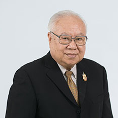
Position
Speciality
Language spoken
Medical school
- Faculty of Medicine Siriraj Hospital, Mahidol University
Residencies
- Department of Anaesthesia, Siriraj Hospital
Fellowships
- Southend General Hospital, United of Kingdom
- Hammersmith Hospital Postgraduated Medical School, United of Kingdom
Certifications
- Certificate of competing in Anaesthesiology, The Royal College of Anaesthesiology of Thailand
- Diploma in Anaesthetics of the Royal College of Physicians and Surgeons of England
- Fellow of the Royal College of Anaesthetists of England
Dr. Surawut Prichanond
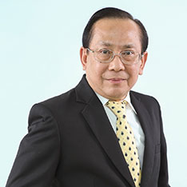
Position
Speciality
- Internal Medicine
- Rheumatology
Language spoken
Medical school
- Faculty of Medicine Ramathibodi Hospital, Mahidol University
Residencies
- Saint Joseph Hospital, U.S.A. (Affiliated with Loyola University, U.S.A.)
Fellowships
- Arthritis and Metaholic Diseases, University of Chicago, U.S.A.
- Rheumatology, University of Illinois, U.S.A.
Certifications
- Thai Board of Internal Medicine
- Thai Board of Rheumatology
- Diplomate, American Board of Internal Medicine
- Diplomate, American Board of Rheumatology
Dr. Vichian Kanchanapoomi
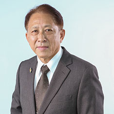
Position
- Executive Director and Director of Vichaiyut Hospital Medical Center
Speciality
Language spoken
Medical school
- Faculty of Medicine Siriraj Hospital, Mahidol University
Residencies
- Orthopaedic Surgery, Faculty of Medicine Siriraj Hospital, Mahidol University
- Orthopaedic Surgery, Maimomides & Coney Island Hospital Medical Center, New York, U.S.A.
Fellowships
Certifications
- Diplomate, American Board of Orthopaedic Surgery
Mr. Rangsi Ratanaprakarn
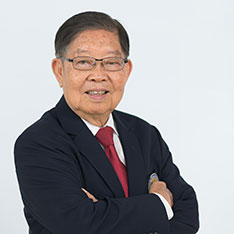
Position
Education
- Master of Science (Structural Engineering), University of Illinois, U.S.A.
- Bachelor of Engineering, Chulalongkorn University
Work Experiences
- Executive Director, Vichaiyut Hospital
- President of Charintr Mining Co.,Ltd
- President of Thai Engineering Consultant Co.,Ltd
Honours and Awards
- President of The Consulting Engineers Association of Thailand
- Member of Engineering Institute of Thailand
- Member of The Consulting Engineers Association of Thailand
Mrs. Watana Limnararat
Position
Education
- Master of Business Administration, Sasin Graduate Institute of Business Administration of Chulalongkorn University
- Bachelor of Business Administration (Major Finance and Banking), Ramkhamhaeng University
- Certificate of Director Certification Program (DCP134) University, Thai Institute of Director (IOD)
- Certificate of Capital Market Academy (CMA9) University
Work Experiences
- Executive Vice President, Vichaiyut Hospital
- Director / Head of Business Advisory Services and Head of Market Groups, KPMG Phoomchai Business Advisory Ltd.
- Executive Director, Arthur Anderson Business Advisory Co., Ltd.
- Senior Vice President, Business Development Depart, Phatra Thanakit Finance and Security Co., Ltd.
- First Vice President, Manufactory and Service Lending Department, Kasikornthai Bank
Honours and Awards
- Director and Treasury of Rakkaew Foundation
- Judge of Student in Free Enterprise (SIFE), National and World Cup
- Lecturer of Thai Institute of Banking and Finance Association
- Director of Credit Executive Club, Association of Finance Companies
- Director of the Credit Executive Club, The Thai Bankers Association
- Certificate of Executive Top Performance, Kasikornbank Public Company Limited
- Master Degree Program (Kasikornthai Bank Scholarship)
- International Banking and Documentary Credit Program in the United Kingdom (Kasikornthai Bank Scholarship)